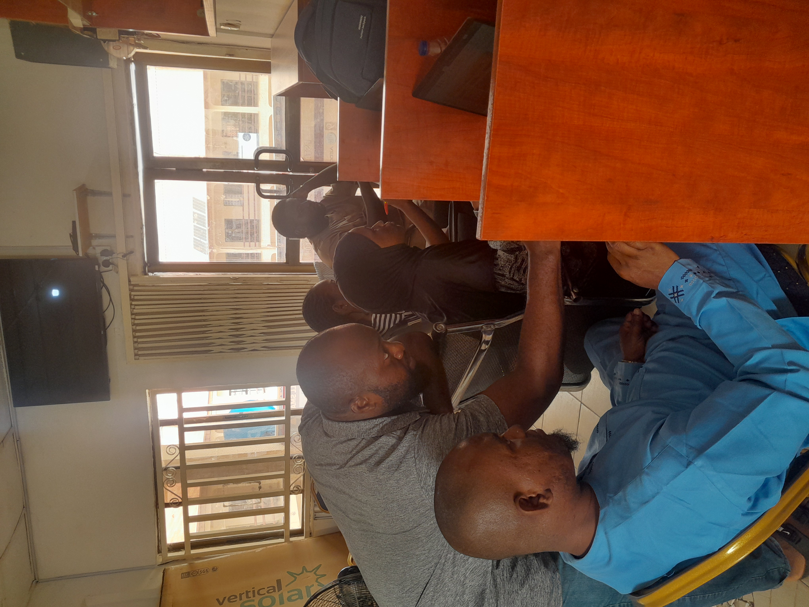

80+
Professionals Trained
35%
Faster Reporting Turnaround
10k+
Records Cleaned & Optimized
About My Expertise
I transform raw data into a narrative that drives growth. With over a year of experience, I bridge the gap between technical complexity and executive strategy using Excel, SQL, and Power BI.
Beyond analysis, I am a BI Educator, having empowered scores of professionals to master data visualization tools.
Technical Arsenal
Python
Analytics/Apps
Analytics/Apps
SQL
Query/ETL
Query/ETL
Power BI
DAX/Viz
DAX/Viz
Excel
Advanced/VBA
Advanced/VBA
Featured Projects
Pictorial Evidences




Validation
"Sunday’s dashboards are game-changers and helped our team make faster strategic decisions."
"His ability to structure complex data into simple dashboards is unmatched."